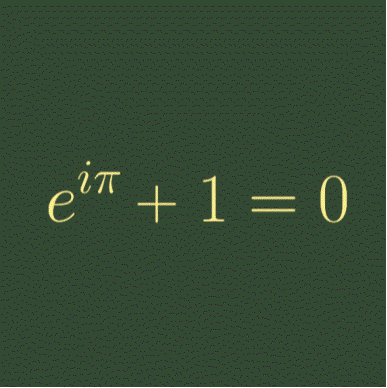
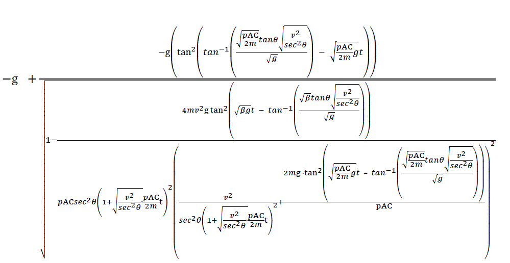

MATH

수학 전분야 중 미적분을 가장 좋아한다.
상단의 사진은 오일러 공식으로 가장 마음에 드는
수식이다.
수학에서 가장 아름다운 공식이라고도 불리는 수식으로, 테일러 전개를 공부하다가 알게 된 공식이다.

요즘엔
고전역학과 미적분을 연관지어 이런 이상한 식을 만들고 있다.
내가 정말 즐겨 쓰는 사이트이다.
울프람 알파라는 사이트인데, 거의 모든 수학 계산을 다 해주니 정말
유용하다. 한번 꼭 써보시길..
wolfram
alpha